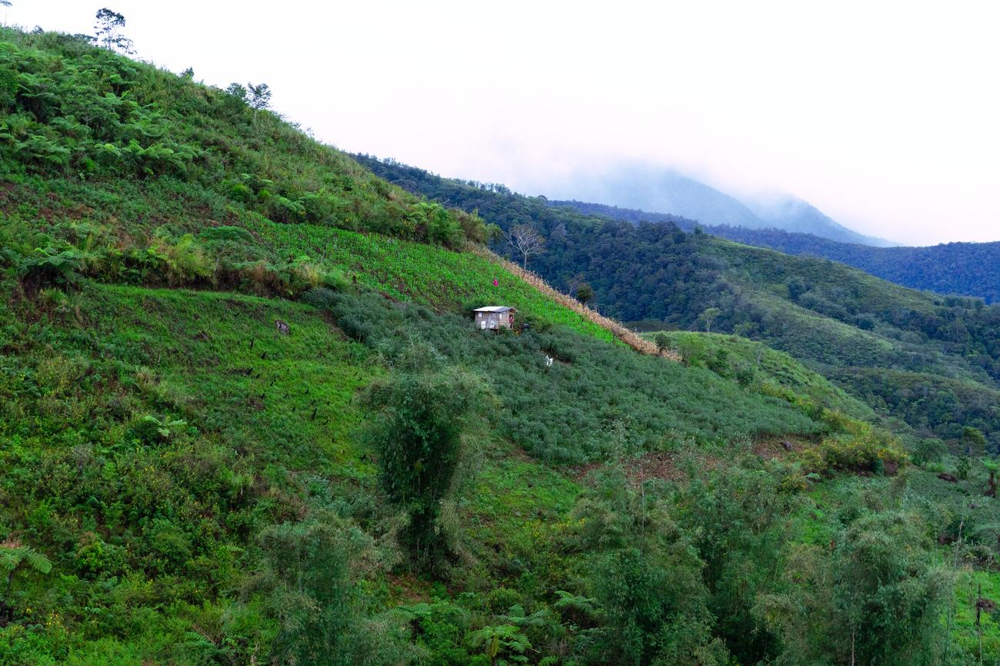
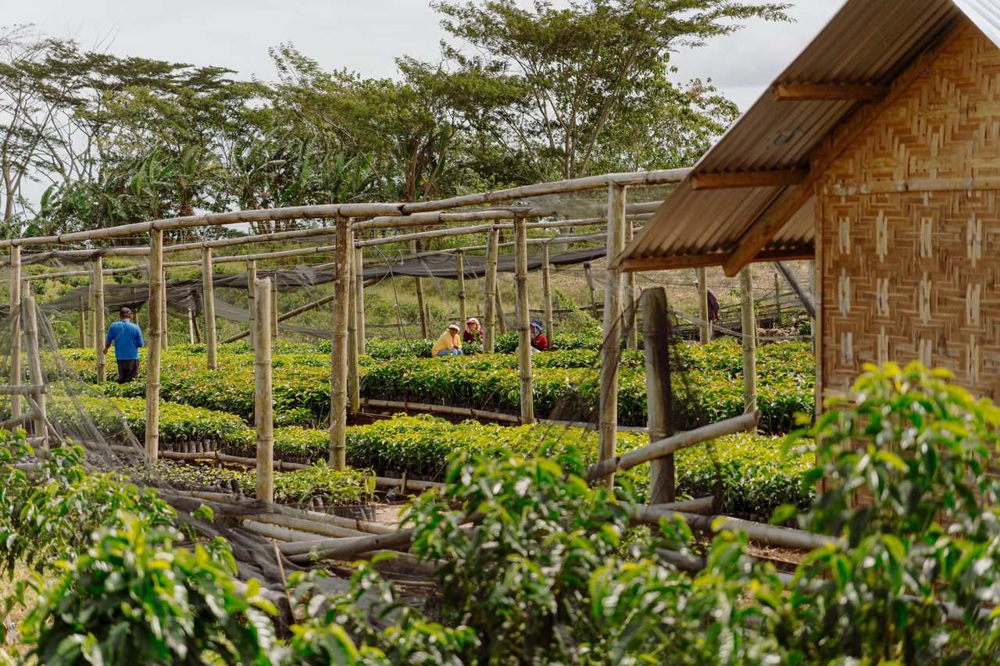
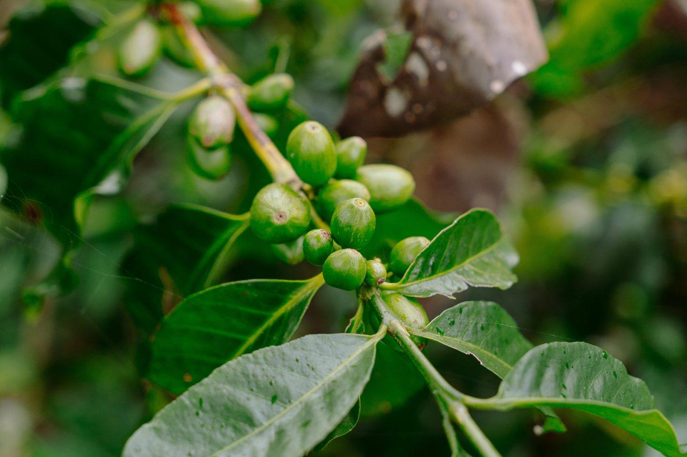
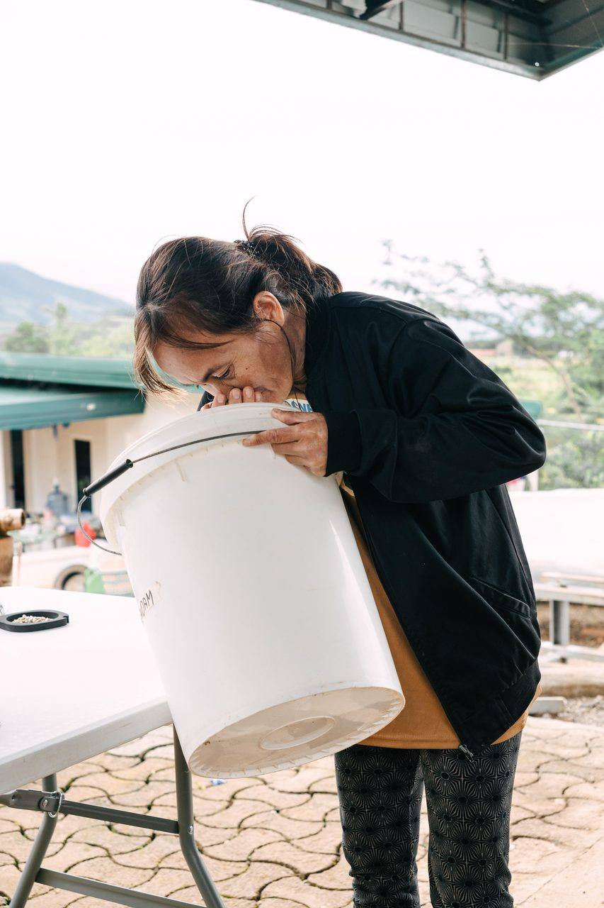
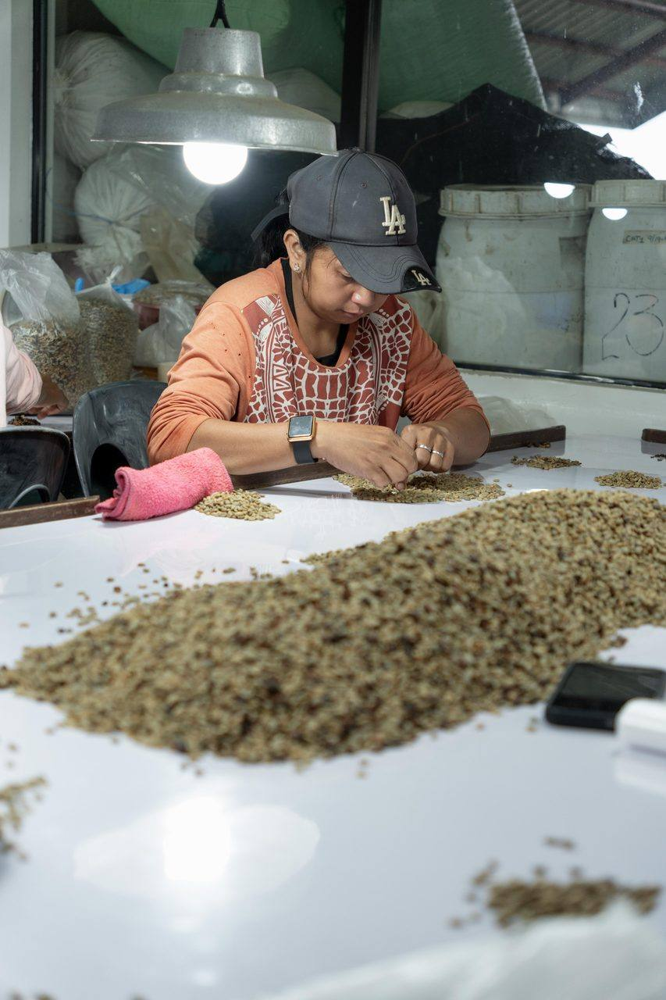
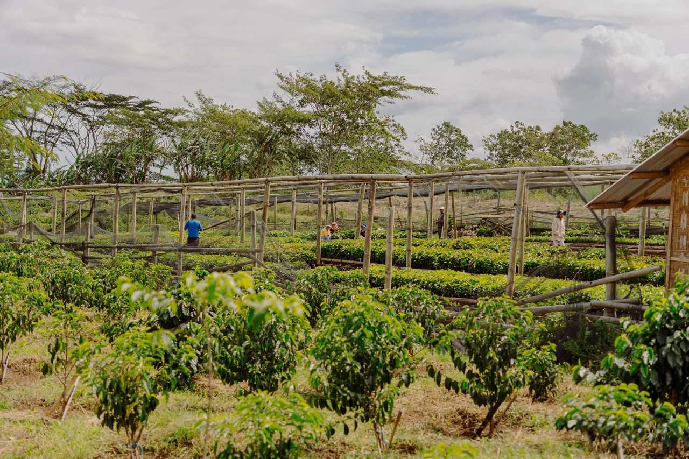

The Farm
Stewarded by Hand.
Shaped by Highland Air.
carefully grown, patiently processed
where we grow
Mt. Kalatungan, Bukidnon Highlands
Our farm sits on the slopes of Mt. Kalatungan — one of the highest peaks in Mindanao — in the municipality of Pangantucan, Bukidnon. This is highland growing country in the truest sense: cool, mist-touched air moves through the canopy at morning, giving way to crisp afternoons that slow the ripening of the cherry and concentrate its sugars.
At roughly 1,300–1,400 metres above sea level, the temperature swings that define great arabica are simply a fact of life here — with growing temperatures that can settle around a cool 14°C. The soil is volcanic and deep, enriched by forest matter beneath a canopy of nitrogen-fixing Falcata shade trees the farm maintains to shield the coffee from harsh sun. Rainfall is generous and distributed through much of the year, reducing the need for irrigation and feeding the trees as nature intended.
Bukidnon’s interior highlands have been growing coffee for generations. What sets the Kalatungan microclimate apart is the interplay of altitude, forest density, and volcanic soil fertility — a combination that produces a cup of remarkable clarity and layered sweetness, untouched by the flatness that lower-grown beans so often carry.
- Mountain
- Mt. Kalatungan Range
- Barangay
- New Eden
- Municipality
- Pangantucan
- Province
- Bukidnon
- Region
- Region X — Northern Mindanao, Philippines
- Elevation
- 1,300–1,400 MASL
- Established
- 2020

The land is not a resource we consume. It is a living inheritance we are trusted to keep — and to return, in time, better than we found it.
from seed to cup
How the Coffee Is Made
There are no shortcuts here. Each step is an act of attention — a decision made in favor of the cup rather than convenience. This is what it means to process coffee at Finca de Garces.
-
Cultivation & Care
Coffee at Finca de Garces is grown the slow way — nurtured through regular pruning, soil feeding, and the kind of daily observation that only comes from farming with genuine affection for the land. We work alongside the trees, not against them, matching our calendar to the rhythms of the highland season rather than forcing any artificial pace.
Falcata shade trees — a fast-growing, nitrogen-fixing legume — are maintained as an integral part of the farm system. They shield the cherries from direct sun, moderate temperature, hold moisture, and return organic matter to the volcanic soil. We farm organically, favouring natural methods over synthetic inputs, and the result is a root system that goes deep, drawing on mineral richness that expresses itself clearly in the cup.

-
Selective Harvest
We harvest cherry by cherry. Not strip-picked, not rushed, not collected to a convenience schedule — each fruit is chosen when it is ready: fully red, heavy with sugar, at its precise moment of peak ripeness.
This selective approach is labor-intensive and unhurried, requiring multiple passes through the same trees as different cherries mature at their own pace. It is the first and most important decision that determines cup quality. Everything downstream depends on starting with the right fruit.

-
Processing
After harvest, the cherries move into our fermentation and processing station — the stage where the flavor profile of the final cup is largely determined. We work with intention here, matching the method to the lot, the season, and the character we want to develop: washed for clarity, natural for body and fruit depth, honey for balance, our signature Full Moon natural, and experimental carbonic and hydro-natural lots.
Drying is part of this craft, too. As the family puts it, “it is through this process that we are able to increase or decrease the bean’s acidity.” We do not rush fermentation, we do not take shortcuts in sorting, and we do not process more than we can monitor with care.

-
Drying & Milling
Drying is patience made physical. Processed beans are laid out and turned throughout the day, often for several weeks, until moisture settles to the narrow window that stabilizes the bean for shipment and roasting. The highland air at Kalatungan — clean, cool, and rarely humid enough to threaten fermentation on the drying bed — is a quiet advantage.
Once dried, the parchment-covered beans rest before milling — a further act of patience. Resting allows moisture to equalize through the bean. The final milling removes the parchment layer and prepares the green bean for grading and inspection, where we cull anything that falls short of specialty grade.

-
The Nursery & Next Generation
The work does not end at the bag. Running alongside our production is an active nursery program — an experimental, carefully observed growing space where we develop the next generation of planting material. Varieties are studied, selection criteria are applied over multiple seasons, and only the strongest, most promising seedlings are propagated forward.
This is how we build for decades, not just for this harvest. Nursery seedlings are made available to fellow farmers as part of our broader commitment to lifting the quality of Philippine specialty coffee at its most fundamental point: the seed.


how we farm
Regenerative & Community-First
We describe our approach as regenerative, because the word carries the right meaning: we aim to leave the land more alive than we found it. That means maintaining the shade canopy, allowing organic matter to return to the soil, avoiding synthetic inputs where traditional and natural methods serve well, and managing water with care in a watershed that many families share.
The farm sits within a landscape where indigenous communities have kept the forest for generations. We hold that relationship with deep respect, learning from it and making sure our work does not diminish what they have preserved. Our relationship with the land is never extractive. It is reciprocal.
The community around the farm is not a backdrop — it is part of the farm itself. We prioritize local labor, share what we learn with neighboring farmers, and see every quality improvement we make as something that raises the floor for everyone farming in the Kalatungan range. A better farm for Finca de Garces should mean, over time, better possibilities for every family growing coffee on these slopes.
This is what stewardship means to us: not just the soil beneath our feet, but the people and the future that depend on it.
Living Soil
Volcanic soil, shade cover, and organic returns keep the growing medium alive and improving season over season.
Community First
Local labor, shared knowledge, and active participation in the improvement of the broader farming community around Mt. Kalatungan.
Highland Stewardship
The forest, the watershed, and the microclimate are resources held in trust. We farm in a way that honors what came before us.
No Rush
Excellence without hurry is not just a philosophy for processing coffee — it describes how we build the farm itself, decision by careful decision.
find us
Where We Are
Farm Location
- Farm Finca de Garces
- Mountain Range Mt. Kalatungan Range
- Barangay New Eden
- Municipality Pangantucan
- Elevation 1,300–1,400 MASL
- Province Bukidnon
- Region Region X — Northern Mindanao
- Country Philippines
Contact & Coordinates
- Coordinates —
- Instagram @fincadegarces
- Email hello@fincadegarces.com
Farm visits are by arrangement. If you are a roaster, cafe, or fellow farmer interested in visiting the farm, please reach out through the inquiry form and we will be in touch.
the land speaks through every bean
Interested in what we grow?
Whether you are sourcing specialty green beans, looking to roast something with genuine provenance, or curious about what highland Bukidnon can produce — we would love to talk.